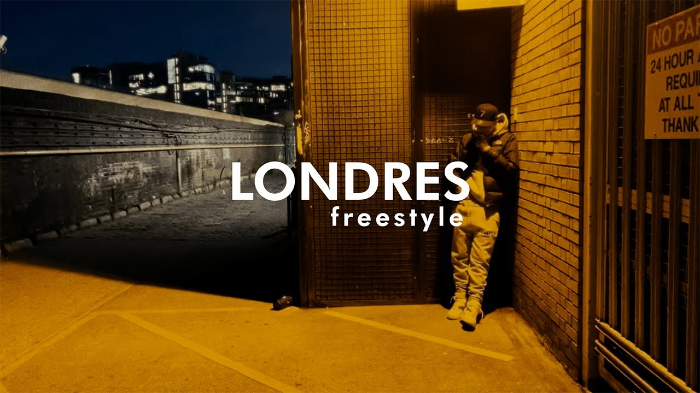
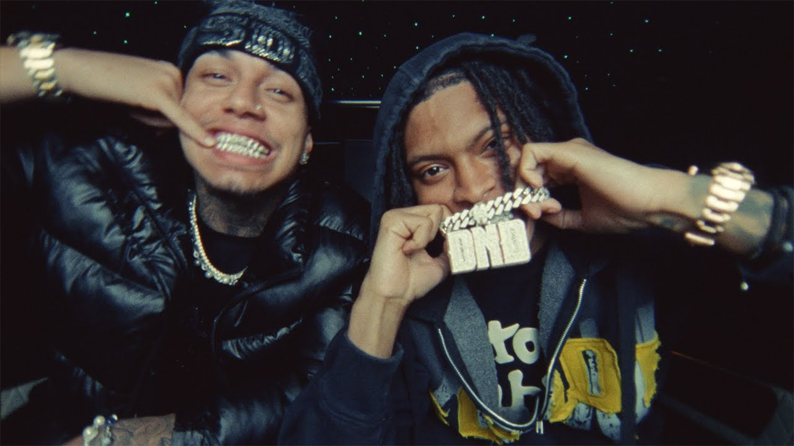
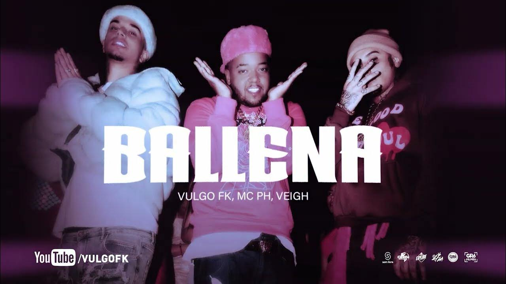

Meus projetos

Clipe de ''Londres Freestyle''
Clipe feito para o projeto Spotify Radar em 2022 com o artista Veigh durante uma viagem para Londres.

Clipe de "Figura Pública"
Faixa feita com rapper de Londres "NEMZZZ'' no final do ano passado abrindo a temporada EVOM.

Clipe de "Ballena"
Feito com os artistas Veigh e MC PH ja ultrapassou 100 milhões de vizualizações e foi uma das musicas mais escutadas de 2023.